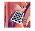
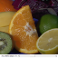

aruco: ArUco Marker Detection
ArUco Marker ImageThis example shows how to create an ArUco marker image. |
|
Detection of ArUco MarkersBasic marker detection and pose estimation from single ArUco markers. |
|
ArUco Grid Board ImageThis example shows how to create an ArUco grid board image. |
|
Detection of ArUco BoardDetection and pose estimation using a Board of markers (an ArUco Planar Grid board). |
|
ChArUco Board ImageThis example shows how to create a ChArUco board image. |
|
Detection of ChArUco CornersThe example shows how to do pose estimation using a ChArUco board. |
|
ChArUco Diamond ImageThis example shows how to create a ChArUco marker image. |
|
|  |
Detection of Diamond MarkersDetection and pose estimation using ChArUco markers. |
Camera Calibration using ArUco BoardCalibration using a ArUco Planar Grid board. |
|
Camera Calibration using ChArUco BoardCalibration using a ChArUco board. |
bgsegm: Improved Background-Foreground Segmentation Methods
Background SubtractorThis demos shows how to use background subtraction methods provided by OpenCV. |
|
Evaluation of background subtraction algorithmsEvaluation of background subtraction algorithms on synthetic sequence. |
bioinspired: Biologically Inspired Vision Models and Derivated Tools
Retina demonstrationDemonstrates the use of wrapper class of the Gipsa/Listic Labs retina model. |
|
OpenEXR images HDR Retina tone mapping GUIHigh Dynamic Range retina tone mapping with the help of the Gipsa/Listic's retina. |
datasets: Framework for Working with Different Datasets
The MNIST dataset of handwritten digitsDemonstrates loading the MNIST dataset. |
dnn_objdetect: DNN used for Object Detection

|
DNN for image classificationAn example of how to use the SqueezeNet model to classify an image. |
Object Detection using Convolutional Neural NetworksAn example of how to use the SqueezeDet model to predict object bounding boxes. |
face: Face Analysis
Face recognitionDemonstration of face recognition with OpenCV. |
|
Face landmark detection in an imageFace landmark detection in an image using ensemble of regression trees (Kazemi). |
|
Face landmark detection in a videoDetect faces in video and finds facial landmarks (Kazemi). |
|
|
|
Training face landmark detectorTrains Kazemi model for facial landmarks detection. |
|
|
Training face landmark detectorTrains Kazemi model for facial landmarks detection. |
|
|
Parameters for training face landmark detectorCreate configuration file with training parameters for Kazemi model. |

|
Facemark AAM trainingTrains active appearance model (AAM) for facial landmarks detection. |
Facemark LBF trainingTrains regressed local binary features (LBF) for facial landmarks detection. |
|

|
Face landmark detection in a videoDetect faces in video and finds facial landmarks (LBF). |
Face swapping using face landmark detectionSwap face in one image with another face in another image. |
hfs: Hierarchical Feature Selection for Efficient Image Segmentation
Image Segmentation using Hierachical Feature Selection (HFS)Demonstrates Image Segmentation using HFS. |
line_descriptor: Binary Descriptors for Lines Extracted from an Image
Lines featuresThis example shows the functionalities of lines extraction and descriptors computation furnished by |
|
Line descriptors matchingThis example shows the functionalities of line descriptors matching furnished by |
|
|
|
Line descriptors radius matchingThis example shows the functionalities of radius matching. |
optflow: Optical Flow Algorithms
Optical Flow EvaluationComputes flow field between two images using various methods and display it (deepflow, simpleflow, sparsetodenseflow, Farneback, TV-L1). |
|
Global Patch ColliderThis sample trains the forest for the Global Patch Collider. It then finds correspondences between two images and calculates error using provided ground truth flow. |
plot: Plot function for Mat data
Plotting demoDemonstrates OpenCV and MATLAB plotting. |
saliency: Saliency API
Saliency AlgorithmsThis example shows the functionality of "Saliency". |
text: Scene Text Detection and Recognition
Scene Text Detection using CNNAn example of how to detect text in a scene. |
|
Scene Text Detection using CNNAn example of how to detect text in a scene. |
xfeatures2d: Extra 2D Features Framework
Introduction to SIFT (Scale-Invariant Feature Transform)In this sample, we we show how to find SIFT Keypoints and Descriptors. |
|
Introduction to SURF (Speeded-Up Robust Features)SURF keypoint detection + keypoint drawing with OpenCV functions. |
|
|
|
BRIEF (Binary Robust Independent Elementary Features)In this demo, we will see the basics of BRIEF algorithm. |
Feature MatchingSURF detector + descriptor + BruteForce/FLANN Matcher + drawing matches with OpenCV functions. |
|
GMS matching strategy (image)Sample demonstrates the GMS matching strategy. |
|
GMS matching strategy (video)Sample demonstrates the GMS matching strategy applied on video frames. |
ximgproc: Extended Image Processing
Superpixels SegmentationThis program demonstrates superpixels segmentation using OpenCV classes |
|
Line Finding with the Fast Hough transformThis program demonstrates line finding with the Fast Hough transform. |
|
Structured Forests for Fast Edge DetectionThis sample demonstrates structured forests for fast edge detection, and edgeboxes. |
|
Graph-Based Image SegmentationA program demonstrating the use and capabilities of a particular graph based image segmentation algorithm. |
|
Niblack ThresholdingSample to compare Niblack thresholding against other algorithms (global thresholding and adaptive thresholding) for an image with varying illumination. |
|
Domain Transform Filter GUIThis program demonstrates Domain Transform filtering using |
|
Disparity Map FilteringIn this tutorial you will learn how to use the disparity map post-filtering to improve the results of |
|
Fast Line DetectorCompares |
|
|  |
Perona-Malik Anisotropic Diffusion GUIThis sample demonstrates Perona-Malik anisotropic diffusion. |
Pei&Lin NormalizationThis program demonstrates Pei&Lin Normalization. |
|
Bright edges detection GUIThis sample demonstrates BrightEdges detector. |
|
Fourier Descriptors GUIThis sample demonstrates using Fourier descriptors for contour matching. |
xphoto: Additional Photo Processing Algorithms
White BalancingOpenCV color balance demonstration sample. |